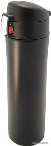
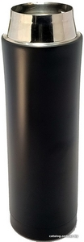
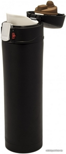
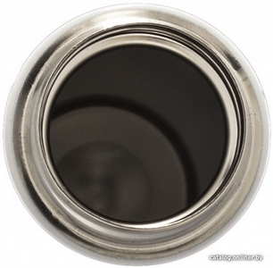
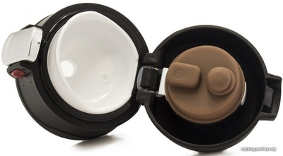

Термокружка Jenniss Sport Black 0.5 л (черный)
🔥🔥🔥🔥🔥
28,00 Byn
|
|
Материал корпуса изготовлен из прочной нержавеющей стали марки AISI 304. Колба изготовлена из пищевой нержавеющей стали марки AISI 304. Крышка термокружки изготовлена из качественного пищевого пластика BPA FREE. Для герметичности используется 2 уплотнителя из высоко температурного пищевого силикона, один одевается на крышку, а другой на клапан для питья, надежно защищая от проливания. Силиконовые уплотнители легко снимаются и одеваются для мытья термокружки. На крышке расположена кнопка открытия с дополнительной блокировкой. Между корпусом и внутренней колбой термокружки находится вакуум. Диаметр кружки позволяет удобно разместить в подстаканнике автомобиля. Вес: 0,3 кг Габариты (высота и диаметр): 235 х 65 мм |
Больше фото     |
|